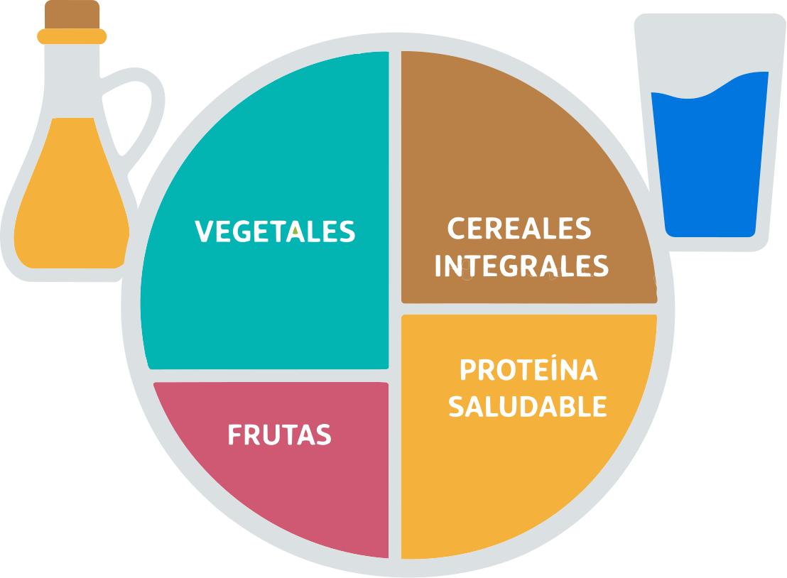

Comedor y Espacio Mediodía
Trabajamos para que nuestras criaturas reciban una alimentación saludable y disfruten de un espacio de mediodía de calidad
La Comisión de Comedor y Espacio Mediodía está formada por un grupo de familias de la AFA que trabajamos para contribuir a que nuestras criaturas reciban una alimentación lo más saludable posible y disfruten de un espacio de mediodía de calidad.
El cole nos da la oportunidad de revisar los menús mensuales que se proponen. Sabemos lo importante que es que nuestros peques coman bien y que además les encante, por lo que siempre buscamos el equilibrio entre alternativas saludables y menús que disfruten.


¿Qué hacemos en la comisión?
Velamos por la calidad de la alimentación y el bienestar en el espacio de mediodía
Revisión de menús
Revisamos los menús mensuales propuestos, buscando el equilibrio entre alternativas saludables y platos que los peques disfruten, cumpliendo con la normativa vigente.
Visitas al comedor
Coordinamos visitas mensuales de familias al comedor para probar el menú y conocer de primera mano cómo funciona este espacio.
Propuestas de mejora
Recogemos y canalizamos propuestas para mejorar el comedor escolar, como la adquisición de bandejas de aluminio recomendadas por nutricionistas.
Iniciativas
Menús temáticos y cultura gastronómica
Promovemos iniciativas como la incorporación de menús temáticos inspirados en la gastronomía de diferentes países, con el objetivo de acercar a las niñas y niños a otras culturas a través de la comida.
No dejamos nada al azar: todas nuestras propuestas y recomendaciones se hacen desde el conocimiento y el cuidado, cumpliendo con la normativa vigente sobre comedores escolares. Cuando sugerimos una mejora, lo hacemos sabiendo que es viable y beneficiosa para nuestras criaturas.




Nuestra referencia nutricional
El Plato para Comer Saludable de Harvard
En nuestra revisión de los menús escolares nos guiamos por el modelo del Plato para Comer Saludable, creado por expertos en nutrición de la Escuela de Salud Pública de Harvard. Este método visual propone una forma sencilla de organizar cada comida para que sea equilibrada y nutritiva.
La idea es dividir el plato en cuatro grandes grupos: la mitad debe estar compuesta por verduras y frutas variadas (las patatas no cuentan como verdura); un cuarto corresponde a cereales integrales como arroz integral, pasta de trigo integral o pan integral; y el otro cuarto se reserva para proteínas saludables como pescado, aves, legumbres o frutos secos, limitando las carnes rojas y procesadas.
El modelo también recomienda utilizar aceites saludables como el aceite de oliva, beber agua como bebida principal y mantenerse activo. Aplicar estas directrices nos ayuda a asegurar que los menús del comedor ofrecen a nuestras criaturas una alimentación variada, completa y basada en la evidencia científica.
Espacio Mediodía
Más que un comedor
Nos organizamos para recoger y trasladar las inquietudes de las familias en relación con el espacio de mediodía, que incluye no solo el momento de la comida, sino también los tiempos de descanso y de juego.
Entendemos el espacio de mediodía como un momento también educativo, en el que es fundamental cuidar el ambiente y velar por el desarrollo y la convivencia de nuestras criaturas desde una perspectiva inclusiva y de respeto.


¡Súmate!
Participa en la comisión
Animamos a todas las familias que quieran participar a sumarse a esta comisión, para seguir contribuyendo juntas a mejorar el bienestar de nuestras niñas y niños en el colegio.
Si quieres acudir a una visita al comedor o tienes propuestas de mejora, ponte en contacto a través del email de la AFA.